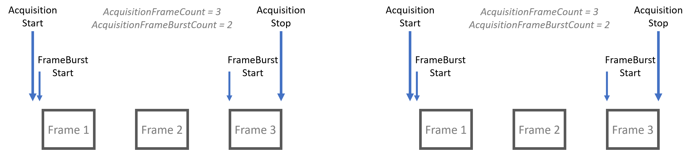
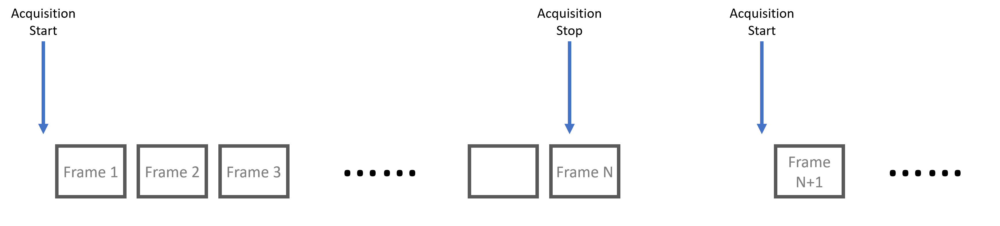

Acquisition Control¶
Contents
Acquisition Control contains features related to image acquisition. Triggering and exposure control functionalities are included in this section.
Acquisition Modes¶
There are 3 main types of acquisition modes - SingleFrame acquisition, MultiFrame acquisition, and Continuous acquisition.
SingleFrame Acquisition¶

Under SingleFrame acquisition mode, one frame is acquired after AcquisitionStart is called. AcquisitionStop is an optional call as the acquisition process automatically stops after the single frame is acquired. During the acquisition process, all Transport Layer parameters are locked and cannot be modified.
 Note that if “Acquisition Stop” is executed after “Acquisition Start” but prior to a frame is available,
it is possible that no frame is acquired.
Note that if “Acquisition Stop” is executed after “Acquisition Start” but prior to a frame is available,
it is possible that no frame is acquired.
The following code block demonstrates configuring camera to single frame acquisition mode.
1 2 3 | // Connect to camera
// Get device node map
AcquisitionMode = SingleFrame;
|
MultiFrame Acquisition¶

Under MultiFrame acquisition mode, frames are acquired once AcquisitionStart is called. The number of frames acquired is dictated by the parameter AcquisitionFrameCount. During the acquisition process, all Transport Layer parameters are locked and cannot be modified.
 Note that AcquisitionStop is optional under this acquisition mode.
Note that AcquisitionStop is optional under this acquisition mode.
MultiFrame with FrameBurstStart¶
A burst of frames is defined as a capture of a group of one or many frames within an acquisition. This can be achieved with MultiFrame acquisition mode as demonstrated in the diagram below. Note in the diagram, the second FrameBurstStart in each acquisition sequence only results in 1 frame acquired since AcquisitionFrameCount is set to a value of 3.
{kind=link}
Continuous Acquisition¶
{kind=link}
Under Continuous acquisition mode, frames are acquired once AcquisitionStart is called. Frames are acquired until AcquisitionStop is called. During the acquisition process, all Transport Layer parameters are locked and cannot be modified.
 Note that if AcquisitionStop is called during the last frame
then the acquisition sequence will stop after the current frame finishes.
Note that if AcquisitionStop is called during the last frame
then the acquisition sequence will stop after the current frame finishes.
The following pseudocode demonstrates configuring the camera to Continuous acquisition mode:
1 2 3 | // Connect to camera
// Get device node map
AcquisitionMode = Continuous;
|
Continuous Acquisition with FrameBurstStart¶
A burst of frames is defined as a capture of a group of one or many frames within an acquisition. This can be achieved with Continuous acquisition mode as below. Note that when AcquisitionStop is called, the current frame will need to be finished.

| Node Name | Description |
|---|---|
| AcquisitionMode | Specifies the acquisition mode of the current device. It helps determine the number of frames to acquire during each acquisition sequence. |
| AcquisitionStartMode | Specifies the acquisition start mode. |
| AcquisitionStart | Start the acquisition sequence for the current device. |
| AcquisitionStop | Stop the acquisition sequence for the current device. |
| AcquisitionFrameCount | This node specifies the number of frames to be acquired under MultiFrame AcquisitionMode. |
| AcquisitionBurstFrameCount | This parameter is ignored if AcquisitionMode is set to SingleFrame. This feature is also constrained by AcquisitionFrameCount if AcquisitionMode is MultiFrame. |
| AcquisitionFrameRate | Controls the acquisition rate (in Hertz) at which the frames are captured. |
| TransmissionFrameRate | Specifies the rate (in Hertz )at which frames are transmitted. |
| AcquisitionFrameRateEnable | Controls if the AcquisitionFrameRate feature is writable and used to control the acquisition rate. |
| AcquisitionLineRate | Controls the rate (in Hertz) at which the Lines in a Frame are captured. |
| TriggerSelector | This node selects the specific trigger type to configure. |
| TriggerMode | Controls the On/Off status of the current trigger. |
| TriggerSoftware | Executing this will generate a software trigger signal. Note that current TriggerSource must be set to Software. |
| TriggerSource | This node specifies the source of the trigger. It can be a software internal signal of a physical input hardware signal. |
| TriggerActivation | This node specifies the state in which trigger is activated. |
| TriggerOverlap | Specifies the type of trigger overlap permitted with the previous frame or line. This defines when a valid trigger will be accepted (or latched) for a new frame or a new line. |
| TriggerLatency | Enables low latency trigger mode. |
| TriggerDelay | Specifies the delay in microseconds (us) to apply after the trigger reception before activating it. |
| TriggerArmed | Specifies whether the trigger is armed. If the trigger is not armed, triggers will be ignored. |
| ExposureTime | Controls the device exposure time in microseconds (us). |
| ExposureTimeRaw | Reports the device raw exposure time value. |
| ShortExposureEnable | Sets to Short Exposure Mode. |
| ExposureAuto | Sets the automatic exposure mode. |
| ExposureAutoLimitAuto | Specifies usage of ExposureAutoLowerLimit and ExposureAutoUpperLimit. |
| ExposureAutoLowerLimit | Specifies the lower limit of ExposureAuto algorithm. |
| ExposureAutoUpperLimit | Specifies the upper limit of ExposureAuto algorithm. |
| TargetBrightness | Sets the target brightness in 8-bit. |
| ExposureAutoAlgorithm | Controls the auto exposure algorithm. |
| ExposureAutoDamping | Controls the auto exposure damping factor in percent. Bigger values converge faster but have higher chance of oscillating. |
| ExposureAutoDampingRaw | Controls the auto exposure damping factor raw value. Bigger values converge faster but have higher chance of oscillating. |
| CalculatedMedian | Reports the current image exposure median value. |
| CalculatedMean | Reports the current image exposure average value. |
| AutoExposureAOI | Category for auto exposure AOI features. |
Subcategories: